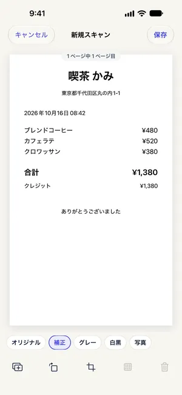

ノートの手書きをきれいに残す：iPhoneでスキャンしてPDF化
最終更新 2026-10-22
ノートの手書きは鉛筆の跡が薄く、紙も反っているので、ただの写真だと読みにくくなります。Paperkeepは書類カメラでページをまっすぐに補正して撮り、「補正」や「白黒」フィルタで鉛筆の文字を濃くしてから1つのPDFに保存します。ノートを撮ってPDFで残し、人に渡すまでProは要りません。
まずは iOS の標準機能でやる方法
- 「メモ」Appの「書類をスキャン」は、手書きノートの撮影にも向いています。続けて撮れば1つのメモにまとまります。
- スキャン画面でフィルタを白黒やグレースケールにすると、鉛筆の文字が少しはっきりします。
- メモの中のスキャンをPDFで送るには、スキャンを開いて共有ボタンをタップします。科目ごとに分けるならメモのフォルダを自分で作ります。
Paperkeep でやる方法
- ノートを開いて「スキャン」から1ページずつ撮影し、最後のページまで撮れたらカメラ画面の「保存」へ進みます。
- 「新規スキャン」画面で、鉛筆の文字なら「白黒」、蛍光ペンや色ペンを残したいなら「補正」を選び、「すべてのページを…にする」で全ページをそろえます。
- 端が切れたページは「切り取り」→「端を検出」で合わせ直し、撮り忘れたページは「ページを追加」→「ページを追加スキャン」で足せます。
- 「ページを整理」で各ページ右側のつまみ（≡）をドラッグして順番を整え、「保存」をタップします。
- 「その他」（⋯）→「新規フォルダ」で科目ごとのフォルダを作り、書類の「フォルダへ移動」で入れておくと探しやすくなります。

この書類ならではのコツ
- リングノートは見開きで撮るより1ページずつ撮るほうが、真ん中の影が入らずまっすぐに仕上がります。
- 手書き文字の認識は印刷された文字より精度が下がります。検索に頼るより、タイトルに科目と単元を書いておきましょう。
- 無料の書き出しでも透かしは入らないので、テスト前に友だちへそのまま送れます。
まもなく App Store で公開します。